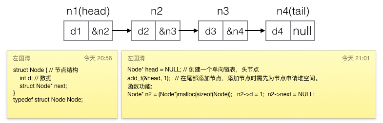
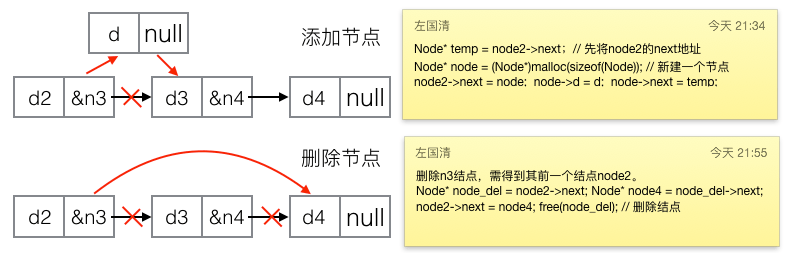

c语言单向链表的实现
这篇文章发布于 2016/10/16，归类于 C与APUE
标签：
c语言单向链表，单向链表，单向链表理解，c 链表，c 单向链表
c语言指针和结构体一学完就是链表了。也是一个分水岭，很多小白都卡在了这里，当初我自学时就是在这个位置时放弃了。我发现很多地方讲链表都讲得比较复杂，其实链表很简单，就是将多个数据(结构体类型)连在一起。只要有该链表头结点的地址，就可以操作这一连串数据。

最开始自学C时，指针的概念都不怎么懂，在熟悉链表的过程中，指针就慢慢的熟悉了。链表由结点组成。结点用结构体来表示，单向链表的结构体有两个变量，一个存数据，一个存下一个结点的地址。就是把一连串的地址有序的连接起来，用头结点地址表示链表。每个结点的空间用malloc来分配。双向链表就是多了个pre的指针,环形链表只是head的pre指向尾结点，尾部的next指向头结点，一般单向链表理解了，其他的就好理解了。单向链表可以模拟一般数据库的功能，增删查改都行，以前用文件和链表写过纯C的学生成绩管理系统。如果想提升可以去研究内核的链表结构。链表一般情况也不怎么用，在高级语言中都有现成的类，方法都写好了，直接用就行了。

具体代码如下:
/*
* C单向链表的实现与运用
* Sun Oct 16 17:32:42 2016
* Create by Kevin Zuo
*/
#include <stdio.h>
#include <stdlib.h>
struct Node { // 组成单向链表的节点,类似于对象
int d; // 这里只是示范,也可以将d替换为另一个struct对象，如学生信息结构体
struct Node* next; // 纯C的学生成绩管理系统可不依赖数据库，直接用链表+文件
};
typedef struct Node Node;
int size(Node* head) // 计算链表长度
{
if (head == NULL) return 0;
int count = 0;
while (head != NULL) {
count++;
head = head->next;
}
return count;
}
void print(Node* head) { // 打印链表
if (head == NULL) printf("链表为空!\n");
else {
while (head != NULL) {
printf("%d ", head->d);
head = head->next;
}
printf("\n");
}
}
// 结点的增加
void add_h(Node** head, int t) // 头部添加结点, 可能需要修改头结点，传地址
{
// 在堆空间申请一个片空间，用来存放结点
Node* p = (Node*)malloc(sizeof(Node)); // 代码长度关系，就不进行出差判断了
p->d = t;
p->next = NULL;
if (*head == NULL) *head = p; // 如果链表为空，将p赋值给
else {
p->next = *head;
*head = p;
}
}
void add_t(Node** head, int t) // 尾部添加结点
{
Node* p = (Node*)malloc(sizeof(Node)); // new 一个结点
p->d = t;
p->next = NULL;
if (*head == NULL) *head = p; // 如果链表为空，将p赋值给
else {
// 为了防止改动头结点, 用另一个指针来遍历
Node* temp = *head;
while (temp->next != NULL) { // 找到尾部结点
temp = temp->next;
}
temp->next = p;
}
}
void add_pos(Node** head, int t, int pos) // 指定位置(pos)添加结点
{
if (pos < 1 || pos > size(*head)) { // 位置超出范围
printf("位置错误!"); return;
}
Node* p = (Node*)malloc(sizeof(Node)); // new 一个结点
p->d = t;
p->next = NULL;
Node* temp = *head;
for (int i = 0; i < pos-1; i++) { // 第一个位置添加，指针后移0，第二个，后移1,第pos个后移pos-1次
temp = temp->next;
}
p->next = temp->next;
temp->next = p;
}
// 结点的删除
void del_h(Node** head) // 删除头部结点
{
if (*head == NULL) return;
Node* temp = *head;
*head = (*head)->next;
free(temp);
}
void del_t(Node** head) // 删除尾部结点
{
if (*head == NULL) return;
Node* temp = *head;
if (temp->next == NULL) { // 只有一个结点
*head = NULL;
free(temp);
return;
}
// 至少有两个结点
while ((temp->next)->next != NULL) { // 找到要删除的前一个结点
temp = temp->next;
}
free(temp->next);
temp->next = NULL;
}
void del_pos(Node** head, int pos) // 删除指定位置(pos)结点
{
if (pos < 1 || pos > size(*head)) {
printf("位置错误!"); return;
}
if (pos == 1) del_h(head);
else if (pos == size(*head)) del_t(head);
else { // 不是头尾, 且长度至少为3
Node* temp = *head;
for (int i = 0; i < pos-2; i++) // 删除第二个，移动0,第3个,移动1，第pos个，移动pos-2
temp = temp->next;
Node* temp2 = temp->next;
temp->next = temp2->next;
free(temp2);
}
}
// 结点的逆序 单向链表特有
void inv(Node** head)
{
if (size(*head) < 2) return;
Node* t1 = *head; // 结点1
Node* t2 = t1->next; // 结点2
Node* t3; // 当结点2改为指向结点1时，临时存结点2的next
while (t2 != NULL) { // 这种模型很常见，如菲波那切数列, 1/2+2/3+3/5,都可以用这种思路
t3 = t2->next;
t2->next = t1;
Node* t = t2;
t2 = t3;
t1 = t;
}
(*head)->next = NULL;
*head = t1;
}
// 结点的排序
Node* find_zx(Node** head) // 寻找最小值结点地址
{
// 肯定不为空，至少有1个结点
Node* temp = *head;
if (temp->next == NULL) { // 只有一个结点
*head = NULL;
return temp;
} else { // 至少两个结点
Node* min = temp;
Node* pre_min;
while (temp->next != NULL) {
if (min->d > (temp->next)->d) {
min = temp->next;
pre_min = temp;
}
temp = temp->next;
}
pre_min->next = min->next;
return min;
}
}
void add_node(Node** head, Node* p) // 尾部添加完整结点
{
p->next = NULL;
if (*head == NULL)
*head = p;
else {
Node* temp = *head;
while (temp->next != NULL) {
temp = temp->next;
}
temp->next = p;
}
}
void sort(Node** head) // 排序
{
if (size(*head) < 2) return;
//思路 新建一个链表头结点，每次找出最小值结点(返回地址,解除与原链表的关系)，依次添加到新链表
Node* list = NULL;
while(1) {
if (size(*head) == 0) break;
Node* t = find_zx(head);
// printf("[[%d ",t->d); 测试用
add_node(&list, t);
}
*head = list;
}
int main(int argc, char* argv[])
{
Node* head = NULL; // 创建一个单向链表，头节点
add_h(&head, 1);
add_h(&head, 2);
add_h(&head, 3);
add_t(&head, 4);
add_t(&head, 5);
add_t(&head, 6);
add_pos(&head, 10, 1);
add_pos(&head, 100, 3);
add_pos(&head, 1000, 8);
/*del_h(&head);
del_h(&head);
del_t(&head);
del_t(&head);
del_pos(&head,1);
del_pos(&head,4);
del_pos(&head,2);
*/
printf("size=%d\n", size(head));
print(head);
inv(&head);
print(head);
sort(&head);
print(head);
exit(0);
}